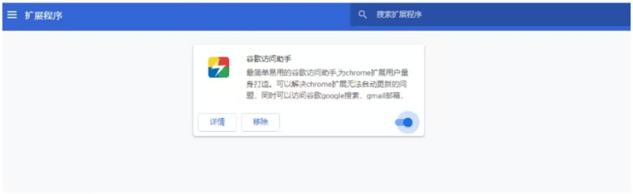
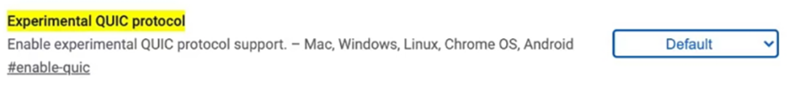
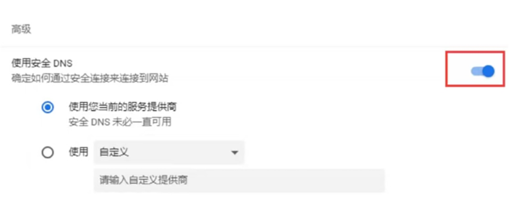

返回
欢迎查看常见问题
智慧服务，让您使用更简单

Chrome 浏览器无法打开被墙网站怎么办?
若您连接 VPN 后，使用 Chrome 浏览器访问被墙网站出现无法访问，访问速度慢的情况，请参考本篇文章解决这个问题
Chrome浏览器受到VPN用的喜爱,它兼容各种功能插件，还有自带的安全访问设置。但如果使用姿势不正确也会出现访问效果差，甚至无法访问网站的情况。具体情况及解决办法如下：
第一种:浏览器插件影响(以谷歌访问助手举例)谷歌访问助手是一款最常见的浏览器翻墙插件，它会严重干扰使用 VPN 后的访问效果，如何自检并解决:
1.打开 Chrome 浏览器点击右上角三个点>更多工具>扩展程序
2.找到代理类型的插件，点击移除(关闭插件依然会出现无法访问的情况)
3.若 Chrome 浏览器登录了Google 账户,移除插件后,请退出 Google 账户重新登录(或使用无痕模式访问)
4.完成以上步骤后重新打开浏览器访问即可

第二种:浏览器自带协议影响：
QUIC 协议是 Chrome浏览器默认开启的实验性协议，会导致访问翻墙内容时速度变慢，甚至出现无法访问的情况，禁用此协议保证使用效果
1.在 Chrome 浏览器中输入:chrome://flags/#enable-quic;
2.找到 Experimental QUlC protocol 项
3.点击后面选项框，选择 Disabled,
4.完成以上步骤后，在浏览器重新访问要访问的内容即可。

第三种:浏览器的安全 DNS 设置:
若您的电脑是Win7系统，在Chrome浏览器中个别网站无法访问。例如:Google，Youtube都正常Facebook访问不了。并且以上设置都无法解决可以尝试以下步骤

1.打开 Chrome 浏览器点击右上角三个点>设置>隐私设置和安全性>安全>使用安全DNS
2.把使用安全DNS后面的开关关闭
3.在电脑桌面点击开始菜单，输入cmd，右击cmd,选择管理员运行
4.在打开的 DOS窗囗中输入netsh winsockreset 回车 执行命令
5.执行成功后会提示，重置成功，重启电脑后命令生效
6.重启电脑后，打开chrome浏览器，访问之前无法访问的网站即可。
注:若您在下载和使用过程中有任何问题，您随时可以发送邮件给 {{kfEmail}}，将由专业的客户服务人员帮助您获取到最新版本的软件。